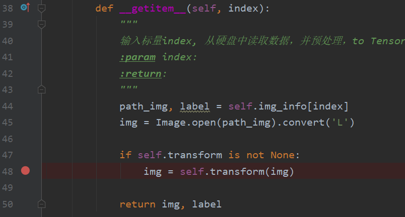
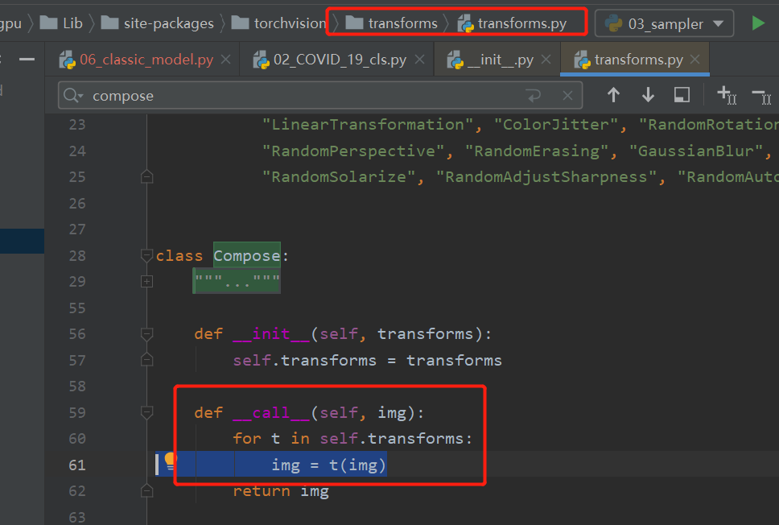

3.4 transforms
本结分为两部分，首先介绍pytorch的图像数据增强函数库——transforms，分析它的工作机制，同时介绍常用的方法。
transforms简介
数据增强（Data augmentation）已经成为深度学习时代的标配，数据增强目的是为了增加训练数据的丰富度，让模型见过多样性的数据以增加模型的泛化能力。更多关于数据增强的概念，推荐大家阅读动手学的image-augmentation章节
一般地，数据增强可分为在线(online)与离线(offline)两种方式，离线方式指的是在训练开始之前将数据进行变换，变换后的图片保存到硬盘当中，在线方式则是在训练过程中，每一次加载训练数据时对数据进行变换，以实现让模型看到的图片都是增强之后的。其实，这两种方法理论上是等价的，一般的框架都采用在线方式的数据增强，pytorch的transforms就是在线方式。后续不做特别说明，数据增强特指在线数据增强。
transforms是常见图像变换库，包含二十多种基础方法以及多种组合功能，通常可以用Compose把各方法串联在一起使用。大多数的transforms类都有对应的 functional transforms ，可供用户自定义调整。transforms提供的主要是PIL格式和Tensor的变换，并且对于图像的通道也做了规定，默认情况下一个batch的数据是(B, C, H, W) 形状的张量。
在transforms库中包含二十多种对变换方法，那么多的方法里应该如何挑选，以及如何设置参数呢？ 这是值得大家仔细思考的地方，数据增强的方向一定是测试数据集中可能存在的情况。
举个例子，做人脸检测可以用水平翻转（如前置相机的镜像就是水平翻转），但不要用垂直翻转（这里指一般业务场景，特殊业务场景有垂直翻转的人脸就另说）。因为真实应用场景不存在倒转（垂直翻转）的人脸，因此在训练过程选择数据增强时就不能加垂直翻转。
运行机制
在正式介绍transforms的系列方法前，先来了解pytorch对数据增强的运行机制，我们继续通过debug模式在dataloader部分进行调试，观察一张图片是如何进行数据增强的。
同样的，我们回顾2.2小结的COVID-19代码，在dataloader中设置断点，进行debug。这里有一个小技巧，我们可以到dataset的getitem函数里设置一个断点，因为我们前面知道了图像的读取及处理是在dataset的getitem里，因此可以直接进入dataset，不必在dataloader里绕圈。当然，前提是需要大家熟悉dataloader的运行机制。
在第48行img = self.transform(img)设置断点，可以看到self.transform是一个Compose对象，继续进入self.transform(img)

来到 transforms.py 的Compose类的 __call__函数：这个函数的逻辑是依次调用compose对象里的变换方法，从此处也可看出数据是串联的，上一个方法的输出是下一个方法输入，这就要求各个方法之间传输的数据对象要一致。继续单步运行，进入第一个t(img)， 第一个t是Resize。

来到D:\Anaconda_data\envs\pytorch_1.10_gpu\Lib\site-packages\torch\nn\modules\module.py的Module类的_call_impl函数：Module类是pytorch模型、网络层的核心，这个类有1854行代码，下一章将详细介绍模型模块以及Module。在这里我们暂且知道Resize这个变换方法是一个Module类，它实际的调用在1102行，进入1102行会来到Resize类的forward方法。
来到 D:\Anaconda_data\envs\pytorch_1.10_gpu\Lib\site-packages\torchvision\transforms\transforms.py的Resize类的forward函数：可以看到此函数仅一行代码F.resize(img, self.size, self.interpolation, self.max_size, self.antialias)，继续进入它。
来到D:\Anaconda_data\envs\pytorch_1.10_gpu\Lib\site-packages\torch\nn\functional.py 的resize函数：functional模块是对一系列操作的封装，这里看到419行，resize功能的实现。继续进入419行。
来到 D:\Anaconda_data\envs\pytorch_1.10_gpu\Lib\site-packages\torchvision\transforms\functional_pil.py的resize函数：这里终于进入到最核心的Resize方法实现了，这个函数里需要时间缩放的w,h，这里的计算代码非常值得大家学习，同时函数进来之后对参数的一系列判断，也值得借鉴。从此函数可以看到它利用了PIL库的resize函数对PIL图像进行resize。最终对图像resize是这265行代码：return img.resize(size[::-1], interpolation)
然后依次返回，回到transforms.py的Compose类的call函数，此时 img = t(img)完成了1次对图像的变换。接着继续执行for循环，把compose中的变换执行完毕，就对图像做完了变换、增强。
总结一下，一开始采用transforms.Compose把变换的方法包装起来，放到dataset中；在dataloader依次读数据时，调用dataset的getitem，每个sample读取时，会根据compose里的方法依次地对数据进行变换，以此完成在线数据增强。而具体的transforms方法通常包装成一个Module类，具体实现会在各functional中。
熟悉此运行机制，便于大家今后自己编写数据增强方法，嵌入到自己的工程中。
系列API
通过单步debug，了解了transforms运行机制，下面看看transforms库提供的一系列方法及使用。更全面的方法介绍请直接看官方文档，官方文档配备了一个图解transforms的教程
这里不再一一展开各方法介绍，只挑选几个代表性的方法展开讲解，其余方法可以到第一版中阅读transforms的二十二个方法
在这里，结合COVID-2019 X光分类场景进行系列API的使用介绍。主要内容包括：
- 具体变换方法使用：resize、Normalize、totensor、FiveCrop、TenCrop
- 特殊方法使用：RandomChoice、RandomOrder、Lambda
- 自动数据增强：AutoAugmentPolicy、AutoAugment、RandAugment
具体变换方法使用
Compose
此类用于包装一系列的transforms方法，在其内部会通过for循环依次调用各个方法。这个在上面的代码调试过程中已经分析清楚了。
Resize
Resize(size, interpolation=, max_size=None, antialias=None)
功能：支持对PIL或Tensor对象的缩放，关于size的设置有些讲究，请结合代码尝试int方式与tuple方式的差异。int方式是会根据长宽比等比例的缩放图像，这个在AlexNet论文中提到先等比例缩放再裁剪出224*224的正方形区域。
ToTensor
功能：将PIL对象或nd.array对象转换成tensor，并且对数值缩放到[0, 1]之间，并且对通道进行右移。具体地，来看源代码 ...\Lib\site-packages\torchvision\transforms\functional.py 下的to_tensor函数
···python
img = img.permute((2, 0, 1)).contiguous()
if isinstance(img, torch.ByteTensor):
return img.to(dtype=default_float_dtype).div(255)
对PIL对象的通道进行右移，由原来的(H x W x C)变为了(C x H x W) ， 接着对数值进行除以255，若是正常的图像像素，那么数值被缩放到了[0, 1]之间。
Normalize
Normalize(mean, std, inplace=False)
功能：对tensor对象进行逐通道的标准化，具体操作为减均值再除以标准差，一般使用imagenet的128万数据R\G\B三通道统计得到的mean和std，mean=[0.485, 0.456, 0.406], std=[0.229, 0.224, 0.225]。相信大家今后再看到这一组数据就明白它们到底怎么来的了。
FiveCrop&TenCrop
这两个方法是AlexNet论文中提及，是一个涨点神器，具体使用方式是一张图片经过多区域裁剪得到5/10张图片，同时放到模型进行推理，得到5/10个概率向量，然后取它们的平均/最大/最小得到这一张图片的概率。
FiveCrop表示对图片进行上下左右以及中心裁剪，获得 5 张图片，并返回一个list，这导致我们需要额外处理它们，使得他们符合其它transforms方法的形式——3D-tensor。
TenCrop同理，在FiveCrop的基础上增加水平镜像，获得 10 张图片，并返回一个 list。
它们的使用与普通的transforms有一点区别，需要代码层面的一些改变，下面就通过具体例子讲解它们的注意事项。
代码
授人以渔：其余的二十多个不在一一介绍，只需要到官方文档上查看，并到配套代码中运行，观察效果即可。
特殊方法使用
PyTorch 不仅可设置对数据的操作，还可以对这些操作进行随机选择、组合，让数据增强更加灵活。
具体有以下4个方法：
Lambda
RandomChoice
RandomOrder
RandomApply
Lambda
功能：可进行自定义的操作，例如上文的FiveCrop中利用lambda很好的处理了上下游transforms数据维度不一致的问题。transforms.Lambda(lambda crops: torch.stack([ToTensor()(crop) for crop in crops]))
RandomChoice
功能：以一定的概率从中选择一个变换方法执行。
RandomOrder
功能：随机打乱一串变换方法。
RandomApply
功能：以一定的概率执行这一串变换方法。这与RandomChoice的区别仅在于它将一组变换看成一个选择单位，RandomChoice是一次选一个，RandomApply是一次选一组（list）
具体使用可配合配套代码
自动数据增强
从transforms丰富的变换方法以及灵活的组合函数可以知道，数据增强的策略可以千变万化，怎样的策略会更好？Google Brain团队就针对这个问题，利用它们的钞能力进行研究，采用RNN网络自动搜索组合策略，寻找较好的数据增强策略，详细可以看这篇文章AutoAugment: Learning Augmentation Strategies from Data。文章中利用RNN搜索出来的策略，可以在Imagenet、Cifar-10和SVHN三个数据集上达到当时的SOTA，pytorch中也提供了基于AutoAugment论文的三个数据集的自动数据增强策略，下面一起来学习它们。
AutoAugmentPolicy
通过论文AutoAugment: Learning Augmentation Strategies from Data我们知道它研究出了针对三个数据集的数据增强策略，在pytorch中同样的提供对应的策略，并设计了AutoAugmentPolicy来指示，直接看源代码，一目了然envs\pytorch_1.10_gpu\Lib\site-packages\torchvision\transforms\autoaugment.py：
class AutoAugmentPolicy(Enum):
"""AutoAugment policies learned on different datasets.
Available policies are IMAGENET, CIFAR10 and SVHN.
"""
IMAGENET = "imagenet"
CIFAR10 = "cifar10"
SVHN = "svhn"
AutoAugment
torchvision.transforms.AutoAugment(policy: torchvision.transforms.autoaugment.AutoAugmentPolicy = , interpolation: torchvision.transforms.functional.InterpolationMode = , fill: Optional[List[float]] = None)
功能：自动数据增强方法的封装，支持三种数据增强策略，分别是IMAGENET、CIFAR10 和SVHN
参数：
policy ：需要是AutoAugmentPolicy类
interpolation：设置插值方法
fill ：设置填充像素的像素值，默认为0，黑色。
AutoAugment也是一个Module类，具体的变换操作在forward()函数中体现，建议大家看看源代码，pytorch_1.10_gpu\Lib\site-packages\torchvision\transforms\autoaugment.py
里面有详细的三组数据增强策略的顺序与参数
例如ImageNet的数据增强策略总共有25组变换，共50个变换：
return [
(("Posterize", 0.4, 8), ("Rotate", 0.6, 9)),
(("Solarize", 0.6, 5), ("AutoContrast", 0.6, None)),
(("Equalize", 0.8, None), ("Equalize", 0.6, None)),
(("Posterize", 0.6, 7), ("Posterize", 0.6, 6)),
(("Equalize", 0.4, None), ("Solarize", 0.2, 4)),
(("Equalize", 0.4, None), ("Rotate", 0.8, 8)),
(("Solarize", 0.6, 3), ("Equalize", 0.6, None)),
(("Posterize", 0.8, 5), ("Equalize", 1.0, None)),
(("Rotate", 0.2, 3), ("Solarize", 0.6, 8)),
(("Equalize", 0.6, None), ("Posterize", 0.4, 6)),
(("Rotate", 0.8, 8), ("Color", 0.4, 0)),
(("Rotate", 0.4, 9), ("Equalize", 0.6, None)),
(("Equalize", 0.0, None), ("Equalize", 0.8, None)),
(("Invert", 0.6, None), ("Equalize", 1.0, None)),
(("Color", 0.6, 4), ("Contrast", 1.0, 8)),
(("Rotate", 0.8, 8), ("Color", 1.0, 2)),
(("Color", 0.8, 8), ("Solarize", 0.8, 7)),
(("Sharpness", 0.4, 7), ("Invert", 0.6, None)),
(("ShearX", 0.6, 5), ("Equalize", 1.0, None)),
(("Color", 0.4, 0), ("Equalize", 0.6, None)),
(("Equalize", 0.4, None), ("Solarize", 0.2, 4)),
(("Solarize", 0.6, 5), ("AutoContrast", 0.6, None)),
(("Invert", 0.6, None), ("Equalize", 1.0, None)),
(("Color", 0.6, 4), ("Contrast", 1.0, 8)),
(("Equalize", 0.8, None), ("Equalize", 0.6, None)),
]
特别说明：这里反复提到的自动数据增强在实际应用中它们是固定的一组变换策略，这是获得这一组策略的过程是通过强化学习自动搜素的，所以称之为自动数据增强策略。
RandAugment
RandAugment是进行N次（num_ops ）变换，变换方法从策略池中随机挑选。pytorch官方文档对于RandAugment给了较高的评价——“RandAugment is a simple high-performing Data Augmentation technique which improves the accuracy of Image Classification models.”
参数：
num_ops ：执行多少次变换
magnitude ：每个变换的强度，
num_magnitude_bins：与变化强度的采样分布有关
如果对autoaugmentation不熟悉的话，理解RandAugment的参数可能有点困难，这里结合代码看一看就知道了。
RandAugment仍旧是一个Module类，来看它的forward()，
def forward(self, img: Tensor) -> Tensor:
"""
img (PIL Image or Tensor): Image to be transformed.
Returns:
PIL Image or Tensor: Transformed image.
"""
fill = self.fill
if isinstance(img, Tensor):
if isinstance(fill, (int, float)):
fill = [float(fill)] * F.get_image_num_channels(img)
elif fill is not None:
fill = [float(f) for f in fill]
for _ in range(self.num_ops):
op_meta = self._augmentation_space(self.num_magnitude_bins, F.get_image_size(img))
op_index = int(torch.randint(len(op_meta), (1,)).item())
op_name = list(op_meta.keys())[op_index]
magnitudes, signed = op_meta[op_name]
magnitude = float(magnitudes[self.magnitude].item()) if magnitudes.ndim > 0 else 0.0
if signed and torch.randint(2, (1,)):
magnitude *= -1.0
img = _apply_op(img, op_name, magnitude, interpolation=self.interpolation, fill=fill)
return img
前面的代码段主要是根据规则获取需要进行的变换方法名称：op_name；变换的强度：magnitude，从
op_index = int(torch.randint(len(op_meta), (1,)).item())
op_name = list(op_meta.keys())[op_index]
这两行代码可以看到，每次采用的变换是随机的选择。
而变换强度magnitude则是根据一个区间里选择，不同变换方法的强度区间在这里：
def _augmentation_space(self, num_bins: int, image_size: List[int]) -> Dict[str, Tuple[Tensor, bool]]:
return {
# op_name: (magnitudes, signed)
"Identity": (torch.tensor(0.0), False),
"ShearX": (torch.linspace(0.0, 0.3, num_bins), True),
"ShearY": (torch.linspace(0.0, 0.3, num_bins), True),
"TranslateX": (torch.linspace(0.0, 150.0 / 331.0 * image_size[0], num_bins), True),
"TranslateY": (torch.linspace(0.0, 150.0 / 331.0 * image_size[1], num_bins), True),
"Rotate": (torch.linspace(0.0, 30.0, num_bins), True),
"Brightness": (torch.linspace(0.0, 0.9, num_bins), True),
"Color": (torch.linspace(0.0, 0.9, num_bins), True),
"Contrast": (torch.linspace(0.0, 0.9, num_bins), True),
"Sharpness": (torch.linspace(0.0, 0.9, num_bins), True),
"Posterize": (8 - (torch.arange(num_bins) / ((num_bins - 1) / 4)).round().int(), False),
"Solarize": (torch.linspace(255.0, 0.0, num_bins), False),
"AutoContrast": (torch.tensor(0.0), False),
"Equalize": (torch.tensor(0.0), False),
}
TrivialAugmentWide
TrivialAugment是采用NAS技术搜索得到的一组数据增强策略，推荐阅读原文TrivialAugment: Tuning-free Yet State-of-the-Art Data Augmentation
使用方法也非常简单，直接看代码即可。
想了解细节，请查看D:\Anaconda_data\envs\pytorch_1.10_gpu\Lib\site-packages\torchvision\transforms\autoaugment.py
TrivialAugment核心
def _augmentation_space(self, num_bins: int) -> Dict[str, Tuple[Tensor, bool]]:
return {
# op_name: (magnitudes, signed)
"Identity": (torch.tensor(0.0), False),
"ShearX": (torch.linspace(0.0, 0.99, num_bins), True),
"ShearY": (torch.linspace(0.0, 0.99, num_bins), True),
"TranslateX": (torch.linspace(0.0, 32.0, num_bins), True),
"TranslateY": (torch.linspace(0.0, 32.0, num_bins), True),
"Rotate": (torch.linspace(0.0, 135.0, num_bins), True),
"Brightness": (torch.linspace(0.0, 0.99, num_bins), True),
"Color": (torch.linspace(0.0, 0.99, num_bins), True),
"Contrast": (torch.linspace(0.0, 0.99, num_bins), True),
"Sharpness": (torch.linspace(0.0, 0.99, num_bins), True),
"Posterize": (8 - (torch.arange(num_bins) / ((num_bins - 1) / 6)).round().int(), False),
"Solarize": (torch.linspace(255.0, 0.0, num_bins), False),
"AutoContrast": (torch.tensor(0.0), False),
"Equalize": (torch.tensor(0.0), False),
}
小结
本小节详细剖析transforms运行机制，熟悉内部工作原理，大家可自行编写变换方法嵌入模型训练中。同时教授大家学习使用transforms的二十多种方法的方法——授人以渔，最后介绍了自动数据增强策略的原理及代码实践。
希望大家利用好数据增强，给自己的模型涨点，一定要记住数据增强的方向是朝着测试集（真实应用场景情况下）的数据分布、数据情况去变换，千万不要什么都往上加。
预告：原计划在本章节介绍albumentations，但由于本章未涉及图像分割、目标检测，以及本章内容也不少了，因此将albumentations放到后续章节，适时进行讲解。
为什么要用albumentations？ pytorch的transforms有什么不足么？ 当然有不足了， pytorch的transforms在处理图像分割与目标检测这一类需要图像与标签同时变换的时候不太方便（也能处理，只是不方便）。尽请期待。